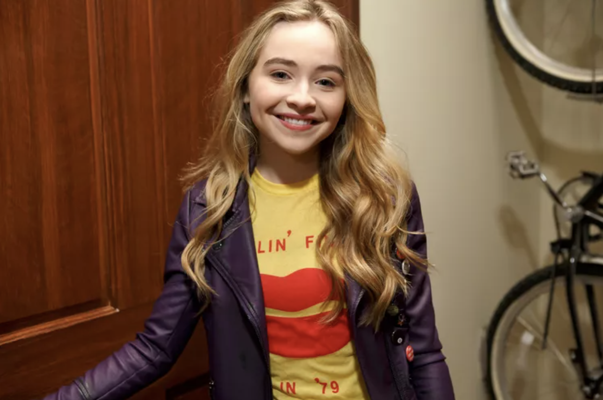
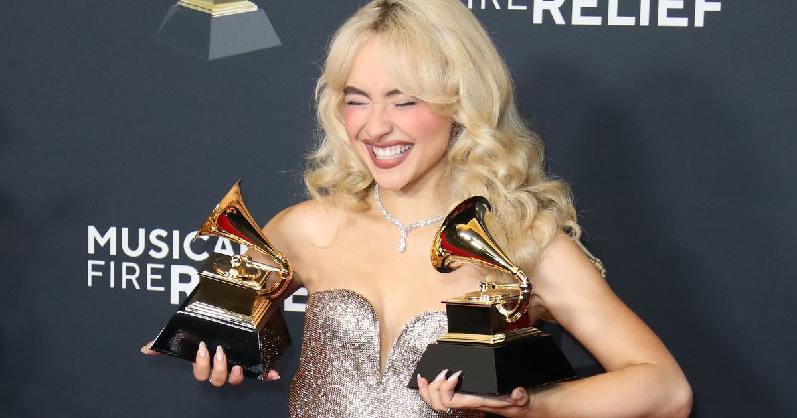
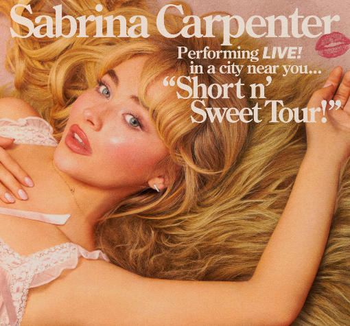

Sabrina Carpenter
ALBUMS
Eyes Wide Open (2015)
- 1. Eyes Wide Open
- 2. Can't Blame a Girl for Trying
- 3. The Middle of Starting Over
- 4. We'll Be The Stars
- 5. Two Young Hearts
- 6. Your Love's Like
- 7. Too Young
- 8. Seamless
- 9. Right Now
- 10. Darling I'm a Mess
- 11. White Flag
- 12. Best Thing I Got
EVOLution (2016)
- 1. On Purpose
- 2. Feels Like Loneliness
- 3. Thumbs
- 4. No Words
- 5. Run and Hide
- 6. Mirage
- 7. Don't Want It Back
- 8. Shadows
- 9. Space
- 10. All We Have Is Love
Singular Act I (2018)
- 1. Almost Love
- 2. Paris
- 3. Thumbs
- 4. Hold Tight
- 5. Sue Me
- 6. prfct
- 7. Bad Time
- 8. Mona Lisa
- 9. Diamonds Are Forever
Singular Act II (2019)
- 1. In My Bed
- 2. Pushing 20
- 3. I Can't Stop Me
- 4. I'm Fakin
- 5. Take Off All Your Cool
- 6. Tell Em
- 7. Exhale
- 8. Take You Back
- 9. Looking at Me
emails i can't send (2022)
- 1. emails i can't send
- 2. Vicious
- 3. Read your Mind
- 4. Tornado Warnings
- 5. because i liked a boy
- 6. Already Over
- 7. how many things
- 8. bet u wanna
- 9. Nonsense
- 10. Fast Times
- 11. skinny dipping
- 12. Bad for Business
emails i can't send fwd: (2023)
- 13. decode
- 14. opposite
- 15. Feather
- 16. Lonesome
- 17. things i wish you said
Short n'Sweet (2024)
- 1. Taste
- 2. Please Please Please
- 3. Good Graces
- 4. Sharpest Tool
- 5. Coincidence
- 6. Bed Chem
- 7. Espresso
- 8. Dumb & Poetic
- 9. Slim Pickins
- 10. Juno
- 11. Lie To Girls
- 12. Don't Smile
Short n'Sweet(Deluxe) (2025)
- 13. 15 Minutes
- 14. Please Please Please (feat. Dolly Parton)
- 15. Couldn't Make it Any Harder
- 16. Busy Woman
- 17. Bad Reviews
C A R E E R
Before Fame

Sabrina Carpenter was born on May 11, 1999, in Quakertown, Pennsylvania.
She developed a passion for performing at a young age, posting singing videos on YouTube and placing third in The Next Miley Cyrus Project in 2009 (Wikipedia, 2024).
She made her acting debut in Law & Order: SVU (2011) before landing her most-known role as Maya Hart in Disney Channel’s Girl Meets World (2014–2017), which brought her widespread recognition (People, 2024).
Breakthrough
Sabrina Carpenter's "Espresso", released on April 11, 2024, became a major breakthrough in her music career, praised for its catchy nu-disco sound and confident lyrics (Official Charts, 2024).
The song topped charts in multiple countries and gained over a billion Spotify streams (Food & Wine, 2024).
Its success was further amplified by a vibrant music video directed by Dave Meyers (The Guardian, 2025).

Awards

Sabrina Carpenter won the Global Success Award at the 2025 Brit Awards and secured two Grammy wins for Short n' Sweet (Best Pop Vocal Album) and "Espresso" (Best Pop Solo Performance), along with nominations for Album of the Year and Best New Artist (Wikipedia, 2025).
"Espresso" also won Song of the Year at the 2024 MTV Video Music Awards.
Additionally, she received BMI Pop Awards for "Cupid" and "Nonsense" and a Nickelodeon Kids' Choice Award for "Espresso" (IMDb, 2025).
Tours
Sabrina Carpenter has headlined multiple tours, starting with the Evolution Tour (2016–2017) and The De-Tour (2017), which helped establish her live presence.
She expanded globally with the Singular Tour (2019) and the Emails I Can’t Send Tour (2022–2023), her most extensive at the time (Wikipedia, 2025).
In 2023, she gained further exposure as an opening act for Taylor Swift’s Eras Tour in Latin America, Australia, and Singapore (People, 2023).
Currently, she is on her biggest and most successful tour: the Short n' Sweet Tour (2024–2025), and due to popular demand is returning to select cities in Fall 2025 (Billboard, 2025).
